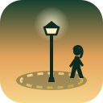

A small 3D human simulation: a rigged character walks a loop around the lamppost, roams where you steer her, or idles. Drag to orbit, pinch or scroll to zoom. In Free roam, use the joystick or WASD.
Promenade needs JavaScript and WebGL.